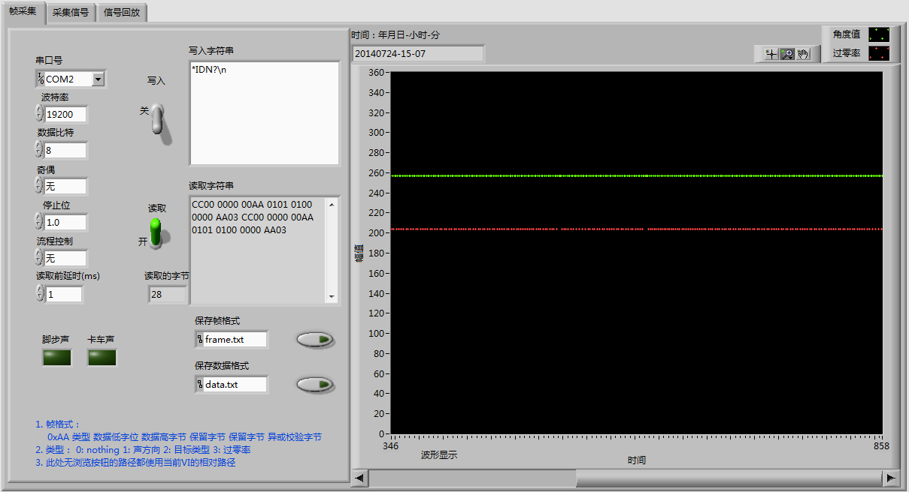
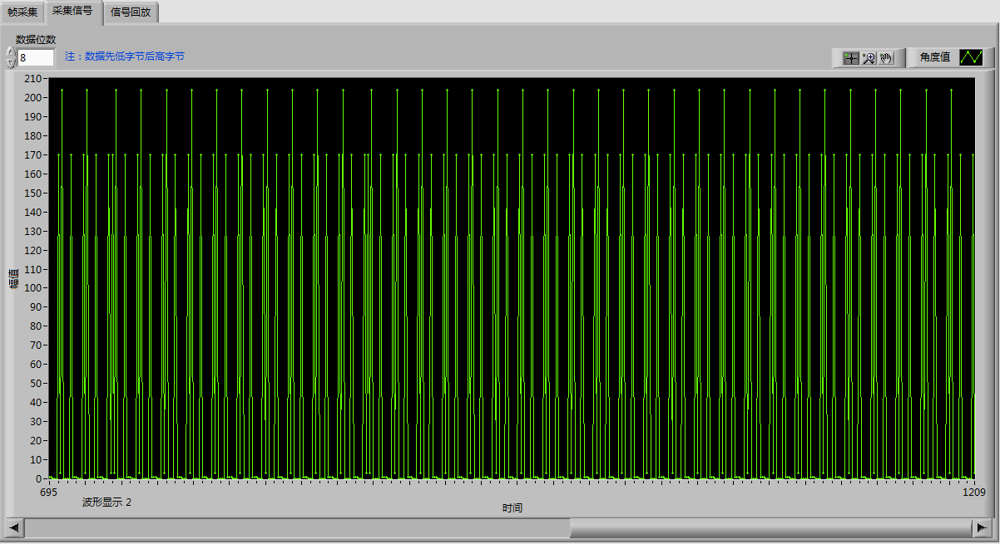
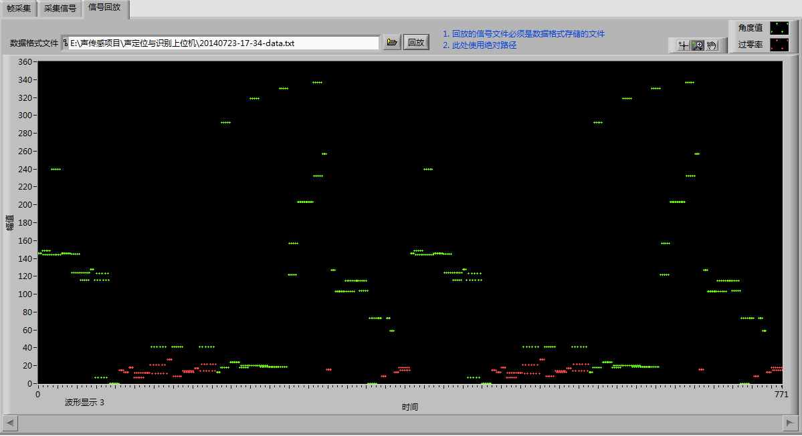
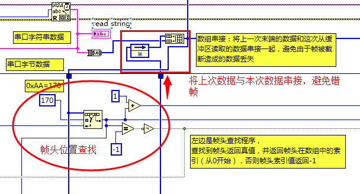
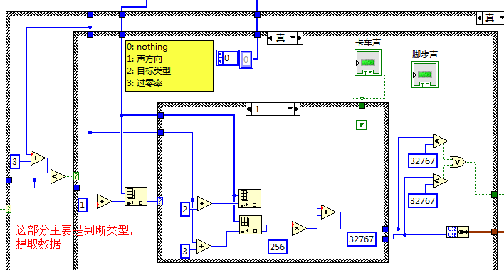
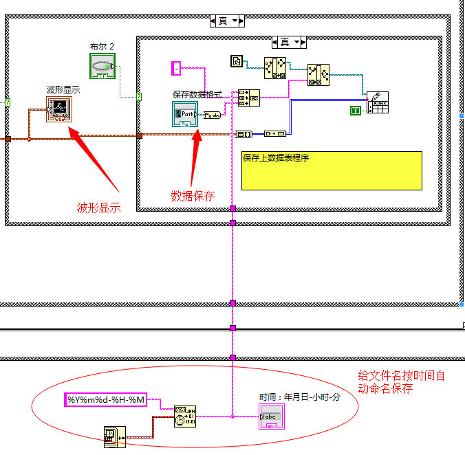
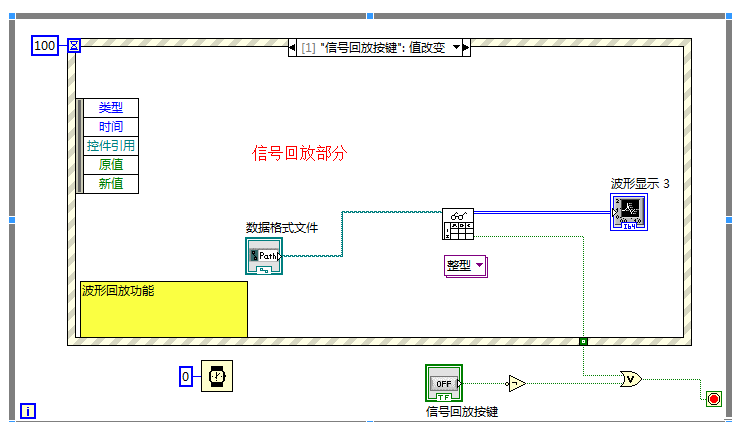

大一的时候，学校开了门公共选修课，叫LabVIEW编程，当时的我当然还不知道LabVIEW是啥东东，但还是选了。上课的老师是机械学院的一个副教授，他给我们展示了好几个用LabVIEW做的项目，譬如油箱监控上位机等，已经不太记得了。后来随着学习单片机、ARM等的串口操作，有时候一个漂亮的上位机（尤其是能显示波形的上位机）在项目中给用户展示非常的有用。过了这么多年，虽然曾经也用LabVIEW写过简单的温度监控上位机，但这次再拿起LabVIEW又好像从头开始一样，语法几已忘记殆尽！
因为数据不算复杂，所以定义简单下位机帧格式：
帧头（0xAA） 类型字节 数据低8位 数据高8位 保留字节1 保留字节2 校验字节如果要传送的数据比较多/复杂，则可以参考ModuleBus协议！
主要功能包括：
  

上面虽然简单，但却是功能的最主要部分，包括帧头查找和错帧处理的程序。错帧发送的情况是：比如从串口中独到的帧并不是从帧头开始而是帧中间开始，如
0x12(数据) 0x00 0x00 0x00 0xAA(帧头) 0x00其前面一帧可能是这样：
... 0xAA(帧头) 0x01(类型) 0x01(数据)这样，按查找帧头的方法，数据0x12就会丢失，实际数据按理应该是0x02*256+0x01，错帧处理就是将上一帧尾部不足一帧的部分加到下一帧中，这样下一帧就变成了：
0xAA(帧头) 0x01(类型) 0x01(数据) 0x12(数据) 0x00 0x00 0x00 0xAA(帧头) 0x00
判断类型过程很简单，使用switch结构就行了（LabVIEW中就是条件结构同时实现了if和switch），编程时就是注意必须设置默认分支就行！

文件保存我使用了数据表，因为它确实简单，这里的亮点是增加了按时间保存的功能，相当于将时间字符串加入到文件名中，这样便于后期对采集的数据进行查找，不至于混乱。

波形回放就是将存储在数据表中的程序重新显示一遍，比较简单！
到现在为止，完整的程序请到https://github.com/xiahouzuoxin/zxSerial下载！
仅供研究使用，谢谢！